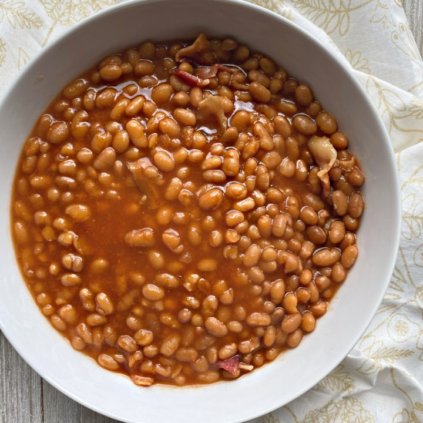

Baked Beans

Description
This is a quick and easy baked beans recipe that can be easily veganized.
Ingredients
- 1 onion finely chopped
- 2 (15 ounce) cans of baked beans drained
- 1/4 cup dark brown sugar
- 1/4 cup ketchup
- 1/4 cup spicy brown mustard
Steps
- Saute onion until tender.
- Stir in the beans, brown sugar, ketchup, and mustard.
- Cook, stirring occasionally, until bubbly.
Back to recipes